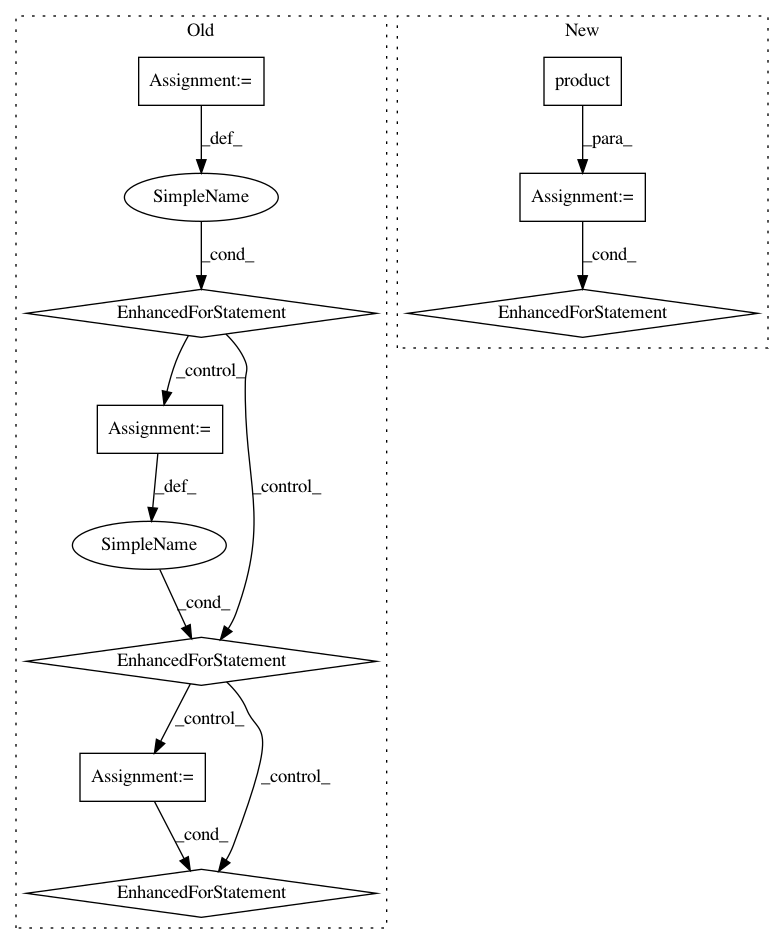

f70c7b7b1e246e32e322ba059f8bf0e5d01a22be,tests/python/unittest/test_optimizer.py,,test_sparse_sgd,#,281
Before Change
wd_options = [{}, {"wd": 0.03}, {"wd": 0.05}, {"wd": 0.07}]
mp_options = [{}, {"multi_precision": False}, {"multi_precision": True}]
for dtype in [np.float32]:
for mom_option in mom_options:
for cg_option in cg_options:
for rg_option in rg_options:
for wd_option in wd_options:
for mp_option in mp_options:
kwarg = {}
kwarg.update(mom_option)
kwarg.update(cg_option)
kwarg.update(rg_option)
kwarg.update(wd_option)
kwarg.update(mp_option)
compare_optimizer(opt1(**kwarg), opt2(**kwarg), shape, dtype,
w_stype="row_sparse", g_stype="row_sparse")
compare_optimizer(opt1(**kwarg), opt2(**kwarg), shape, dtype,
w_stype="default", g_stype="row_sparse")
@with_seed()
def test_std_sparse_sgd():
opt1 = PySGD
opt2 = mx.optimizer.SGD
After Change
agg_options = [{"aggregate_num": 0}, {"aggregate_num": 1},
{"aggregate_num": 4}, {"aggregate_num": np.inf}]
for dtype in [np.float32]:
for params in itertools.product(mom_options, cg_options, rg_options,
wd_options, agg_options):
kwarg = {k: v for param in params for k, v in param.items()}
compare_optimizer(opt1(**kwarg),
opt2(use_fused_step=True, lazy_update=True, **kwarg), shapes, dtype,
w_stype="row_sparse", g_stype="row_sparse")
compare_optimizer(opt1(**kwarg),
opt2(use_fused_step=True, lazy_update=True, **kwarg), shapes, dtype,
w_stype="default", g_stype="row_sparse")
@with_seed()
def test_std_sparse_sgd():
opt1 = mx.optimizer.SGD
opt2 = mx.optimizer.SGD
In pattern: SUPERPATTERN
Frequency: 3
Non-data size: 9
Instances
Project Name: apache/incubator-mxnet
Commit Name: f70c7b7b1e246e32e322ba059f8bf0e5d01a22be
Time: 2020-02-29
Author: szhengac@users.noreply.github.com
File Name: tests/python/unittest/test_optimizer.py
Class Name:
Method Name: test_sparse_sgd
Project Name: CamDavidsonPilon/lifelines
Commit Name: 4de234b54989f65a8c383deed7823ebe42abd704
Time: 2020-07-09
Author: cam.davidson.pilon@gmail.com
File Name: perf_tests/batch_vs_single.py
Class Name:
Method Name:
Project Name: scipy/scipy
Commit Name: 1abdaa98b8cfe9164ab462754aeb73d172ee561b
Time: 2018-03-04
Author: ilhanpolat@gmail.com
File Name: scipy/linalg/tests/test_basic.py
Class Name: TestLstsq
Method Name: test_check_finite